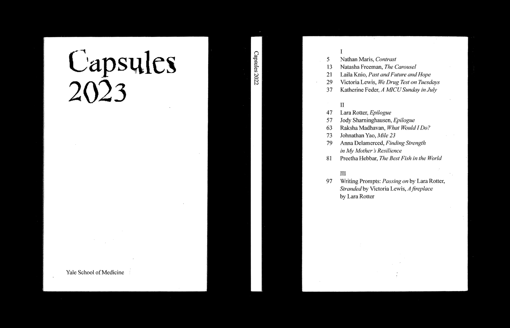
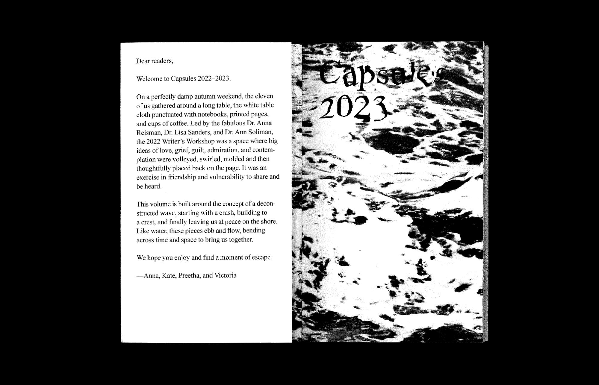
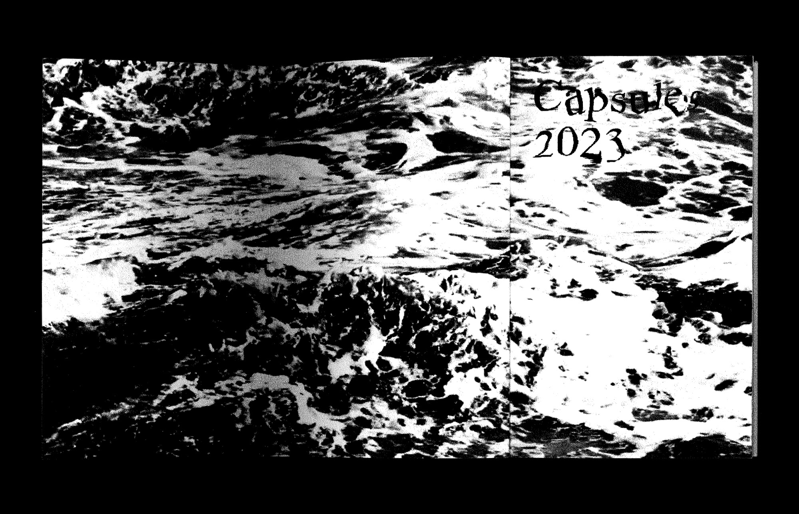
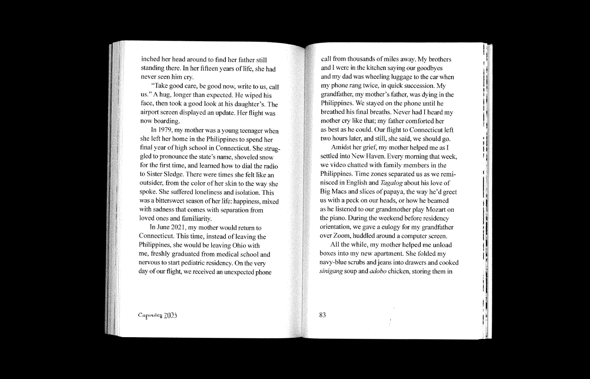
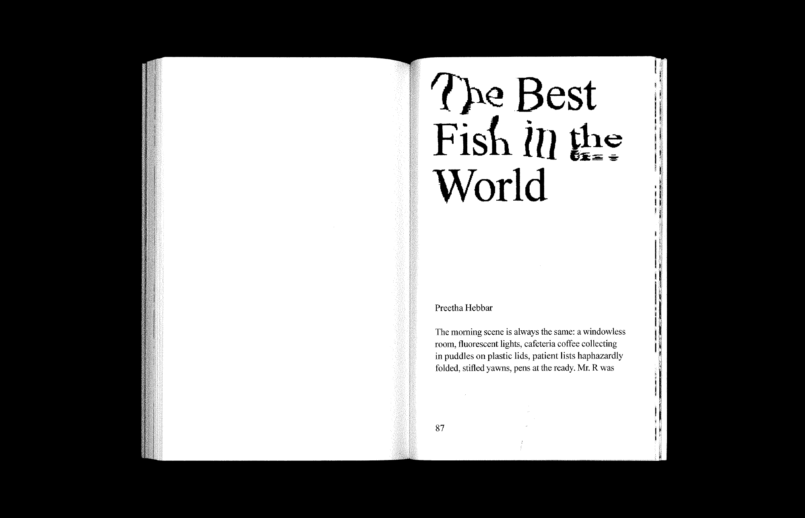

Capsules is the annual publication for Yale Internal Medicine Residency
Writers’ Workshop. This volume is built around the concept of a
deconstructed wave, starting with a crash, building to a crest, and
finally leaving us at peace on the shore. Like water, these pieces ebb
and flow, bending across time and space to bring us together.
(collaboration with Immanuel Yang)